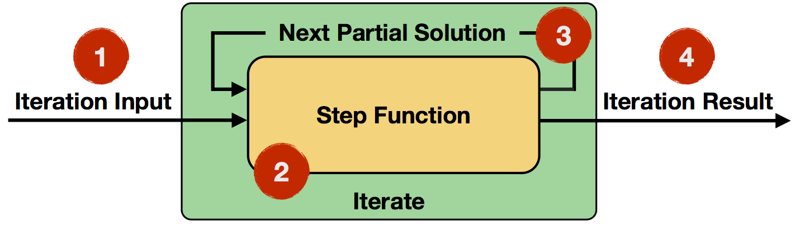
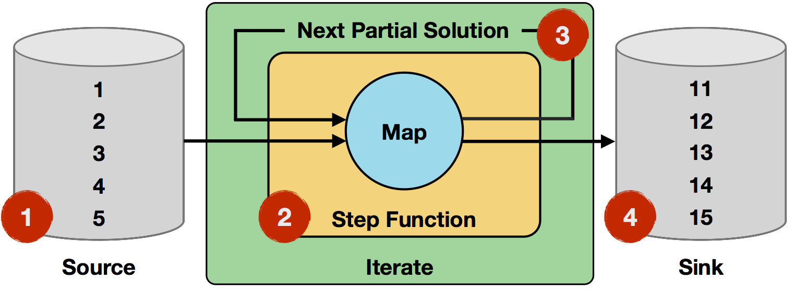
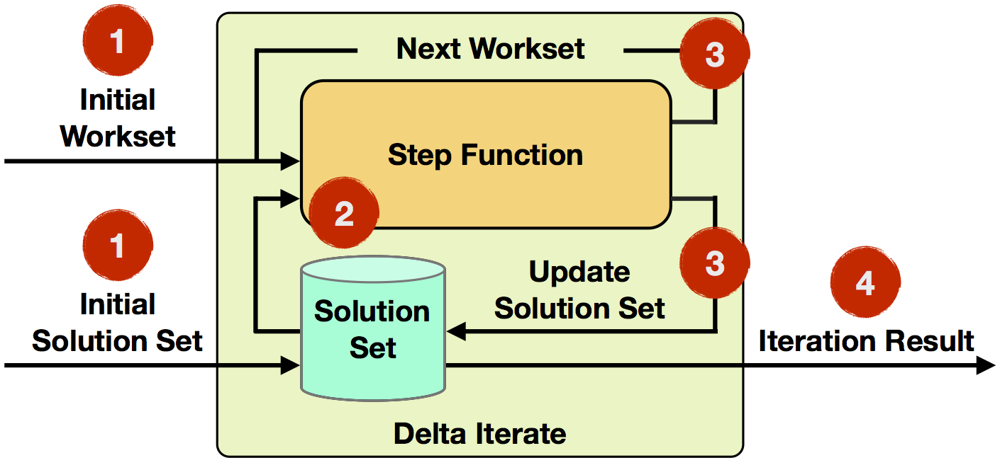

Iterations
注：本节未经校验，如有问题欢迎提issue
迭代算法在数据分析很多领域都会出现， 比如machine learning or graph analysis。 在实现从大数据中抽取出有用的信息， 这种算法非常关键。 随着对这种超大型数据的算法的兴趣不断提高， 有必要用一种大规模并行方式来运行这些迭代。
flink程序通过定义step function 和嵌入step function到一个特定的迭代操作（iteration operator）来实现迭代算法。 由2种操作：Iterate and Delta Iterate。 2种操作都在当前迭代状态上重复调用step 函数直到结束条件触发。
这里介绍这2种操作符和概述它们的用法。 programming guide里面介绍了如何用java或scala实现操作符。flink 通过图计算api Gelly 支持vertex-centric and gather-sum-apply iterations。
The following table provides an overview of both operators:
| Iterate | Delta Iterate | |
|---|---|---|
| Iteration Input | Partial Solution | Workset and Solution Set |
| Step Function | Arbitrary Data Flows | |
| State Update | Next partial solution |
|
| Iteration Result | Last partial solution | Solution set state after last iteration |
| Termination |
|
|
Iterate Operator
iterate operator 覆盖
simple form of iterations（简单迭代）： 在每一次迭代中， step function 消费所有的输入（上一次迭代的结果或初始值）， 然后计算** 局部solution的下一个版本**（e.g. map, reduce, join, etc.）。

- Iteration Input: 输入就是上一次迭代的结果或初始值
- Step Function: 在每一次迭代中，都会执行step 函数. 它是由操作像
map,reduce,join组成data flow 并依赖运行中的task. - Next Partial Solution: 在每一次迭代中， step 函数的结果会反馈到下一次迭代中
- Iteration Result: 最后一次迭代的输出会写到data sink中或被后面的操作使用。
下面有一些可选的结束迭代的条件：
- 最大迭代次数: 如果没有其他终止条件， 迭代将执行这么多次。
- 自定义aggregator 收敛: 迭代允许设定 自定义aggregators 和 收敛准则 ，比如对emitted 数据进行求和(aggregator)然后终止当emit数据为0时 (收敛准则).
下面有些伪码：
IterationState state = getInitialState();
while (!terminationCriterion()) {
state = step(state);
}
setFinalState(state);Example: Incrementing Numbers
下面的例子中，我们 迭代增加一组数字:

- Iteration Input: 从data source读取初始数据， 5个单字段record(integers
1to5). - Step function: step function 是
map, 它会增加itoi+1. input的每个record都会执行这个操作。 - Next Partial Solution: step function的输出就是map 的输出。 本例中， record自增1.
- Iteration Result: 10次迭代后， 最初的值自增了10次， 结果是
11to15.
// 1st 2nd 10th
map(1) -> 2 map(2) -> 3 ... map(10) -> 11
map(2) -> 3 map(3) -> 4 ... map(11) -> 12
map(3) -> 4 map(4) -> 5 ... map(12) -> 13
map(4) -> 5 map(5) -> 6 ... map(13) -> 14
map(5) -> 6 map(6) -> 7 ... map(14) -> 15
Note that 1, 2, and 4 can be arbitrary data flows.
Delta Iterate Operator
** delta 迭代操作** 包含** 增量迭代** 。 增量迭代 ** 选择性修改元素** 演化solution 而不是全量计算。
这导致** 更高效的算法** , 在每一次迭代中，并不是solution的每个元素都变更。 这可以专注在热点部分 并放弃冷数据部分。 solution中大部分快速冷却下来然后后面的迭代仅仅在小的数据集赏进行操作。

- Iteration Input: 初始的workset和solution set 从data sources中读取， 他们会做完第一次迭代的输入。
- Step Function: 每一次迭代会执行step function. 有算子
map,reduce,join等组成的随意数据流. 并且依赖具体的task上. - Next Workset/Update Solution Set: 下一次workset驱动的迭代计算并且反馈给下一次迭代。 更近一步， solution set 会被更新并且暗暗的转发（并不要求重建）。 2个data set 在step function中会被不同的操作更新。
- Iteration Result: 最后一次迭代结束后， solution set会被写入data sink 或者作为后续操作的输入。
默认的delta 迭代的结束条件由 空的workset 收敛条件和最大迭代次数。 当下一个workset为空时或最大迭代次数到了时， 会结束迭代。 也可以设定一个自定义aggregator 和收敛准则.
You can also think about the iterate operator in pseudo-code:
IterationState workset = getInitialState();
IterationState solution = getInitialSolution();
while (!terminationCriterion()) {
(delta, workset) = step(workset, solution);
solution.update(delta)
}
setFinalState(solution);Example: Propagate Minimum in Graph
下面的例子中， 每个顶点 有一个id和一个颜色。 每一个顶点会传播它的顶点id给它的邻居。 目标是在一个字图中为每个顶点分配最小的id. 如果顶点接收的id小于自己的当前id时， 它会把顶点的颜色改成河接收id颜色一样（id也修改为接收的id）。 这种类型的应用常见于* community 分析 和连接组件*计算。
初始值时workset和solutionset。 在上表中， 颜色展示了solution set的演化过程。 在每一次迭代中， 最小id的颜色会传播到各自的子图中。同时， 工作元素的数量会在每次迭代后减少。 这对应了减少workset的数量， 本例中， 3次迭代后， 7个顶点最后减为0， 这样迭代就结束了。 重要的观察是 小的子集覆盖了上面部分。 deleta 迭代能够用workset 抽象来捕获它。
上面子图id 1 (橙色)是最小id， 在第一次迭代中，他会传播到vertex 2， 随后它也把自己的颜色修改为橙色。 顶点3 和顶点4 会接收到id 2(黄色) 作为当前最小id并修改为黄色。 因为顶点1的颜色在第一次迭代中不会改变颜色，因此它在下一次迭代中跳过。
在下面的子图中id 5(蓝绿色)是最小的id， 所有的顶点在第一次迭代中都会收到它。 在下一次workset中， 可以跳过没有发生变化的顶点5.
In the 2nd iteration, the workset size has already decreased from seven to five elements (vertices 2, 3, 4, 6, and 7). These are part of the iteration and further propagate their current minimum IDs. After this iteration, the lower subgraph has already converged (cold part of the graph), as it has no elements in the workset, whereas the upper half needs a further iteration (hot part of the graph) for the two remaining workset elements (vertices 3 and 4).
在第二次迭代，workset的大小以及从7个减少到5个，还是由部分迭代并进一步传播他们的最小值。 这次迭代后， 下面的子图议全部覆盖(图中冷部分)， 因为在workset中没有元素， 然而上面部分需要进一步迭代(图中hot 部分) 还有2个workset元素（顶点3 和4）。
在3次迭代后， workset 为空了， 因此迭代结束了。
Superstep Synchronization
flink 认为 一个迭代操作中的step function是一个单独操作。 在并行设置下， 在迭代状态的不同分区上多个step function的instance 会并行evaluate 。 在一些设置下， 所有并行instance上的setp function的一个evalutation会被称为superstep, 它同时也是同步的粒度。 因此， 一个迭代的所有并行task 需要完成这个superstep， 在下一个superstep启动前。 结束条件也会在superstep barriers中进行评估。